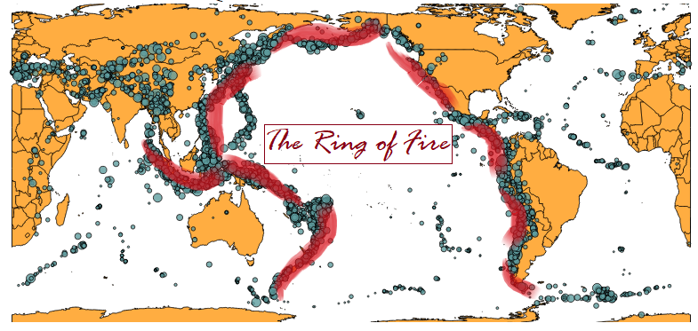
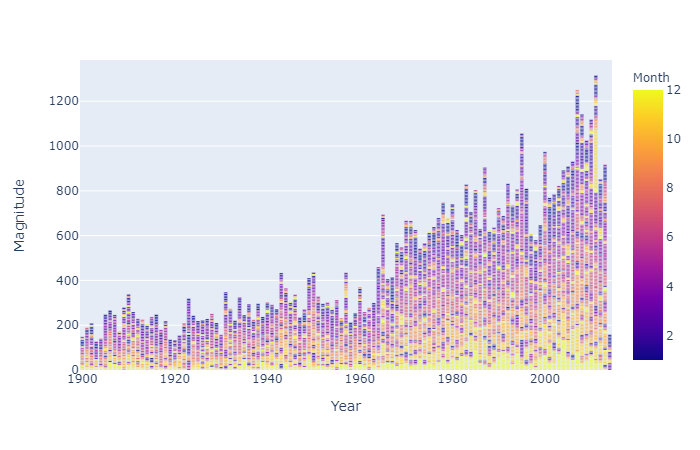

The visualization on the left is every earthquake of magnitude 6 and above that occurred during the period of 1900 to 2014. Data Source: via.
The visualization is interactive.
Hover over the lollipop graph below the world map and brush with the crosshair pointer to display quake locations on the map, over the years.
Plotting the data on the map shows concentration of earthquakes around the region of the Pacific Ocean.
Tweaking the projection of the map a little gives a better view of this cluster of earthquakes in the area known as the “Ring of Fire”, shown in the image below.

The movement of Earth’s tectonic plates below the ring of fire are the cause for earthquakes over the years.
Although there are no visible patterns in relation to time, magnitude, or place of occurrence of earthquakes,
one observation found was the number of earthquakes was the least in February over the years. Click here for an interactive version of the image below.
